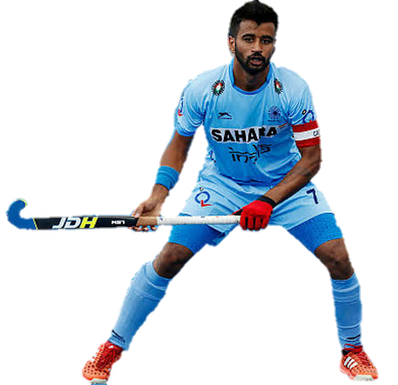

Hockey India is now the governing body with exclusive mandate to direct  and conduct all activities for both men and women's hockey in India.

It is recognized by the Ministry of Youth Affairs & Sports, Govt. of India as the sole body responsible towards promoting Hockey in India.
It was formed after Indian Hockey Federation was dismissed in 2008 by IOA.